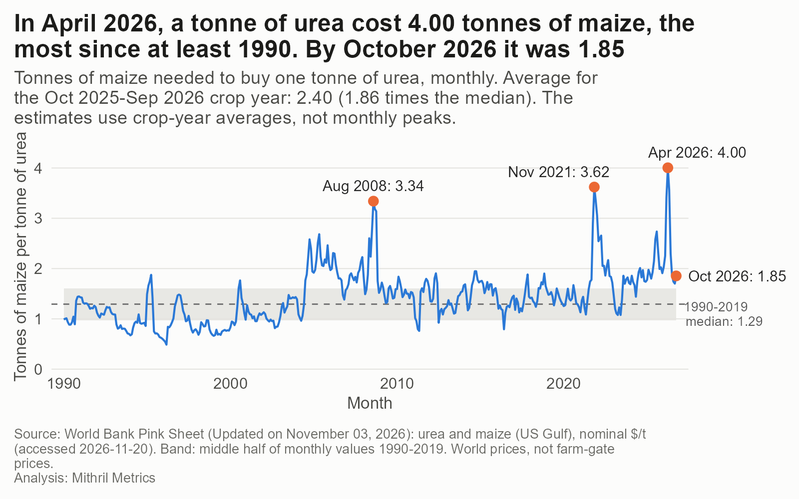

Short answer. In the data, yes. Across 14 Sub-Saharan African countries from 1990 to 2024, a 10% higher urea-to-maize price ratio goes with 1.2% lower maize yields in the same season. At the 2026 ratio, that points to yields roughly 6-7% below a year with typical prices. Countries with large input-subsidy budgets kept fertiliser use from falling, but we find no clear sign that their harvests held up better.
Why this matters now
Fertiliser prices jumped after the Strait of Hormuz, a key route for fertiliser trade, closed on 28 February 2026. In October the OECD published a policy brief on how fertiliser market disruptions turn into food security problems, and its Agricultural Policy Monitoring and Evaluation 2026 report (2 November) uses support estimates to look at how governments responded to past fertiliser price rises. Those estimates cover only one Sub-Saharan African country, South Africa. For the region’s other maize-growing countries, the question is simpler and still open: when fertiliser gets expensive relative to the crop, how much smaller is the harvest, and do input subsidies change that? Sources: OECD fertiliser brief, OECD Agricultural Policy Monitoring and Evaluation 2026 and ICC on the Hormuz closure.
What we did
We take the World Bank’s monthly world prices of urea and maize and turn them into one number per crop year (October to September): the tonnes of maize a farmer would need to sell to buy a tonne of urea. We link it to FAOSTAT maize yields and nitrogen use per hectare in 14 countries, 1990 to 2024 (487 country-years). Each country is compared with its own trend, so the estimate asks how far yields moved from that trend in years when fertiliser was dear, after allowing for El Niño. Countries are split into high and low input-subsidy groups using FAO MAFAP data on public spending on seeds, fertiliser and other variable inputs as a share of all support to food and agriculture. Intervals are 90% and allow for shocks shared across countries in the same year.
What the data show
Fertiliser has not cost this much maize since at least 1990

From 1990 to 2019, a tonne of urea typically cost 1.29 tonnes of maize on world markets. The ratio spiked to 3.34 in August 2008 and 3.62 in November 2021, and reached 4.00 in April 2026. Averaged over the crop year from October 2025 to September 2026, it was 2.40, or 1.86 times the long-run median. By October 2026 it had fallen back to 1.85, still above the 1990-2019 norm.
When fertiliser gets dearer, maize yields fall

Across the 14 countries, a 10% higher urea-to-maize ratio goes with 1.2% lower maize yields in the same crop year (90% interval -1.7% to -0.6%). The result does not hinge on one country: leaving out each in turn gives between -1.4% and -0.7%. It also holds without the 2008-09 crop years (-0.9%), without 2021-22 (-1.2%) and without Zimbabwe’s economic collapse of 2000-09 (-0.9%). Entering the two prices separately shows that the link runs through both: yields fall when urea gets dearer (-1.2% for a 10% rise) and rise when maize does (+1.7%).
We expected the drop to come with a cut in fertiliser use. It does not show in the data. Measured nitrogen use per hectare changes by -0.9% across all countries, with an interval that includes zero, and in the 217 country-years where FAO reports official nitrogen figures, yields still fall (-1.5%) while nitrogen use rises (+2.2%).
Subsidies held up fertiliser use, not yields
Seven countries spend a large share of their agricultural support on input subsidies: Malawi, Zambia, Mali, Zimbabwe, Rwanda, Burkina Faso and Ghana, averaging 20% against 3% in the other seven. In the low-subsidy group, nitrogen use falls 5.0% when the ratio is 10% higher. In the high-subsidy group it rises 3.4%. The gap holds with year effects that absorb everything common to all countries (+5.2%, interval +0.3% to +10.4%).
Yields do not follow the same split. The high-subsidy group’s yield response is -1.3%, the low-subsidy group’s -1.0%, and the difference is not clear (+0.4%, interval -1.0% to +1.8%). MAFAP spending data around the 2008 spike are consistent with this: of the 5 countries with figures for the 2007 and 2009 budget years, spending on variable inputs rose as a share of support in 3 (Malawi, Burkina Faso and Mali) and fell in Kenya and Uganda. Five countries are too few to call this a policy response.
What the 2026 spike implies
If 2026 harvests responded to the price ratio as past harvests did, the 2026 ratio of 2.40 implies maize yields about 7.4% below a year at the 1990-2019 median ratio (interval 4.0% to 10.6%). Using the estimate without Zimbabwe’s collapse years gives 5.7%. Applied to the 61.8 million t of maize these countries harvested in 2024, that is roughly 3.5 to 4.6 million tonnes. This is a benchmark against typical prices, not a forecast: FAOSTAT has no maize data yet for 2025 or 2026.
What this means for policy
- If the aim is early warning, the world urea-to-maize ratio is published monthly and, in these data, moves with national maize yields in the same season. It signals pressure on harvests, not where the losses fall, and it does not replace crop monitoring.
- If input subsidies are meant to keep fertiliser flowing during price spikes, the countries spending most on them did keep nitrogen use from falling. If the aim is to protect harvests, we see no clear yield difference between the two groups. The trade-off is the fiscal cost of scaling up during a spike, against a yield gain these data cannot confirm.
- If the aim is to plan for 2026/27 food needs, our benchmark of roughly 6-7% lower yields (about 2-11%) is a starting range, not a forecast. It averages past responses, uses world rather than farm-gate prices and leaves out the El Niño now under way.
Caveats
- These are associations, not effects. The price ratio is one world series, so years when fertiliser was dear can differ in other ways, and urea prices move with energy and freight costs. The estimate covers that whole cost shock, not fertiliser alone. Results are national averages based on world prices.
- We cannot show the channel. FAO imputes 55% of the nitrogen figures, and even in country-years with official figures, yields fell with the ratio while measured nitrogen use did not. Other inputs or the timing of fertiliser purchases may matter; these data cannot tell.
- The subsidy groups are not random: high-subsidy countries differ in many ways, MAFAP counts only on-budget spending and its variable-input category also covers seeds, energy and credit. Several checks were added after the first results and are reported as such; the headline estimate is the one we planned before seeing the data.
Data & code
- World Bank Commodity Price Data (The Pink Sheet), monthly (CMO-Historical-Data-Monthly.xlsx, sheet ‘Monthly Prices’: Urea; Maize ($/mt, nominal)), version Updated on November 03, 2026 (data to October 2026), accessed 2026-11-19. Link
- FAOSTAT Fertilizers by Nutrient (RFN) (RFN; item Nutrient nitrogen N (total); elements Agricultural Use, Use per area of cropland), version 2026-07-30 (bulk catalogue DateUpdate), data to 2024, accessed 2026-11-19. Link
- FAOSTAT Production: Crops and livestock products (QCL) (QCL; item Maize (corn); elements Yield, Area harvested, Production), version 2025-12-31 (bulk catalogue DateUpdate), data to 2024, accessed 2026-11-19. Link
- FAO MAFAP public expenditure on food and agriculture (bulk file) (public-expenditure-dataset_fao-mafap-programme_march2026rev.xlsx; B1. Variable inputs; III. Total expenditures in support of food and agriculture), version March 2026 revision, accessed 2026-11-19. Link
- NOAA CPC Oceanic Niño Index (ONI) (oni.ascii.txt), version monthly update, accessed 2026-11-19. Link
Checks added after the first results (price split, Zimbabwe, spike years, official nitrogen data, 2008 subsidy spending) are listed in 00_meta.yml. Code to reproduce every number and figure: GitHub. One-page brief: PDF.
Use of AI tools. We use Claude, an AI assistant by Anthropic, as a working tool: to help with coding, data retrieval scripts and first drafts of text. Questions, methods, robustness checks and conclusions are our own, every number is reproducible from the published code, and we review all text before it goes online.

Written by Pietro Sala. Views are the authors’ own. Part of Mithril Metrics: short, reproducible analyses of current agri-food, water and climate policy questions.